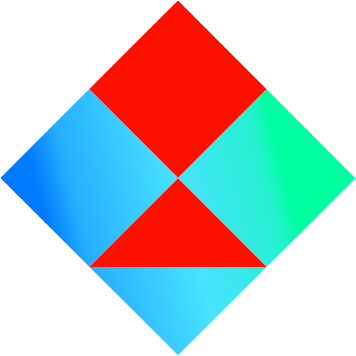

Every browser based game library sucks real bad real good UNTIL NOW... Wahooo, we now have fish-tank; a browser based game library that takes loose inspiration from lua love since it's real nice but not browser based obviously.
I guess another way of describing this library is that it's everything I ended up implementing on top of other libraries implemented beforehand. The interfaces are designed to be easy to use and not require reams of code, so that you can make games quickly and with good code quality. For some reason or other the web seems to hate both of those things.
Admittedly, if you want maximum control, you might find the way this engine's interfaces work a little bit too friendly for your liking. All I can say is enjoy writing your own engine because I don't care.
Making a game with fish-tank
All the concepts talked about here can also be seen in the code of the demo which can be found here.
Also, this is more meant to give you an idea of how the engine works and get you off the ground. It's not 100% thorough because there is full up to date API documentation that you can use to get the finer points through your skull.
The HTML Page
I am going to make a yeoman generator for fish-tank projects, but until I do, basically you are going to want to create an index containing a canvas with a size fixed to whatever size you want. fish-tank does not handle resizing the screen and it doesn't have capabilities for handling different sizes of screen. Games must be built to have fixed dimensions. As you will see on the test project, this doesn't mean that the canvas cannot be scaled via css to fill the window, but the logical size from within the game engine should stay the same.
Yeah so once you have a page with a canvas, you need to include the code of fish-tank, and you need to include your own code. Your own code needs to find the canvas webgl context and the webaudio context and then pass them to the engine along with the setting up stuff like so:
window.onload = () => {
const canvas = document.querySelector('#canvas');
const gl = canvas.getContext('webgl2');
const context = new AudioContext();
if (gl === null || context === null) {
alert('not compatible');
return;
}
fish.start({
rate: 30,
gl: gl,
ac: context,
storePrefix: '/test/'
}, init);
};
So, you can see we have gotten the webgl context and webaudio context and passed them to fish.start which takes an object containing arguments, and a function.
The arguments are documented elsewhere and fairly obvious, and the function is one which returns a promise to create a {fish.screen.Screen}, the game's first screen after the init/loading screen ends. In this init function you can asynchronously load assets and whatever you want to do.
The Screen Stack
Sections of games in fish-tank are divided into screens, you can transition from one screen to another, but as well as that, you can place one screen on top of another, meaning the top screen will run until it ends, then return control to the screen beneath at the same point it was at before it placed the other screen on top.
A screen can also return values to the screen below, much like function calls, hence the term 'call stack'. For example, fish-tank has a built in {fish.gui.GuiScreen} which is a screen that just displays a tree of gui elements and when the gui elements generate a value, the screen pops itself from the stack and returns the generated value to the screen below. This can be used to pause the level while the user responds to dialogue, or whatever else you want.
Screens transition by returning a {fish.screen.Transition} from their update function. If you do not want to transition then return null.
The GUI System aka Knobs
Fish-tank has a built in gui system which the demo program uses heavily. Before you create any gui elements you need to set the global value {fish.gui.defaultStyle} or the style that your created gui elements will have will be undefined which ain't so good as it might crash the program or do something stupid.
class ButtonScreen extends fish.screen.Screen {
constructor(ctx) {
super(ctx);
this.batch = new ctx.gfx.Batch(ctx.usr.texture, 512);
fish.gui.defaultStyle = ctx.usr.style;
this.button = new fish.gui.ButtonKnob('hello');
this.button.fit(new fish.util.Rect(
0,
0,
ctx.gfx.size.x,
ctx.gfx.size.y
);
}
update(delta) {
this.button.update(this.ctx.in, this.ctx.snd, true);
}
render() {
this.button.render(this.batch, true);
}
}
Here is some code for a screen that fills the entire window with a big button that says hello on it. You will notice that we make use of a variable called ctx.usr.style, and one called ctx.usr.texture. ctx.usr is essentially a little object where you can place any data your game is going to need all over the place. Essentially this just means in a game engine this could would have already loaded some texture and created a style.
First we set fish.gui.defaultStyle which is essential, then we create the button object, then we fit the button. Fitting must be called on any tree of gui knobs before they are updated or rendered. It is used to determine where they appear on the screen. You simply set the boundaries for the parent gui object and then rest are fitted in based on their size.
Sprite Batching
Sprite Batching is a very genius technique for 2d rendering that allows you to take advantage of the speed of hardware accelerated rendering while drawing in roughly the same way you would with software rendering. This allows you to make the code way cleaner and have to babysit a lot less state and junk.
render() {
batch.clear();
for (let thing of things) batch.add(thing.sprite, thing.pos);
batch.render();
}
This is the basic process for rendering with a batch. First you clear it to remove any junk currently in it, then you add all of the things you want to render, then you call batch.render to render all of them in a single draw call.
Now, of course there is a limitation which is that you need all of your images to be sub images inside one texture, but you can see how the demo project uses texture atlases to alleviate this. The first argument to batch.add is a rectangle defining the portion of the batch texture to use.
It is worth pointing out if all your screens are using the same texture for sprites, they can all use the same batch object. The only thing is make sure you seperately call clear and render for each screen that uses it because otherwise you will run into weird issues with drawing order when using rendering techniques that do not use the batch (eg ctx.gfx.clear).